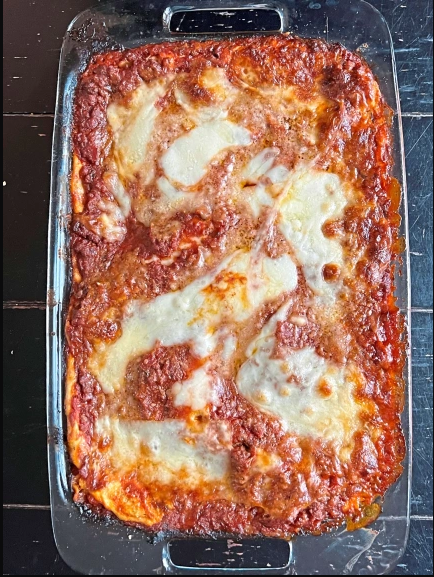

Lasagna

The bechamel adds a little something special to this wonderful lasagna. I
like to use part skim ricotta and mozzarella and low-fat milk to cut some
of the fat in this dish. You won't notice the difference.
Ingredients
- ½ pound bulk mild Italian sausage
- 3 tablespoons butter
- 3 tablespoons all-purpose flour
- 2 cups low-fat milk
- 1 pinch salt
- 1 pinch ground nutmeg
- 1 egg
- 1 (15 ounce) container part-skim ricotta cheese
- 1 tablespoon dried parsley
- 2 (24 ounce) jars marinara sauce, divided
- 1 (9 ounce) package no-boil lasagna noodles, divided
- 1 cup chopped cremini mushrooms, divided
- 1 (16 ounce) package shredded part-skim mozzarella cheese
- ½ cup grated Parmesan cheese, divided
Steps
-
In a Dutch oven, cook sausage, ground beef, onion, and garlic over
medium heat until well browned. Stir in crushed tomatoes, tomato paste,
tomato sauce, and water. Season with sugar, basil, fennel seeds, Italian
seasoning, 1 teaspoon salt, pepper, and 2 tablespoons parsley. Simmer,
covered, for about 1 1/2 hours, stirring occasionally.
-
Bring a large pot of lightly salted water to a boil. Cook lasagna
noodles in boiling water for 8 to 10 minutes. Drain noodles, and rinse
with cold water. In a mixing bowl, combine ricotta cheese with egg,
remaining parsley, and 1/2 teaspoon salt.
- Preheat oven to 375 degrees F (190 degrees C).
-
To assemble, spread 1 1/2 cups of meat sauce in the bottom of a
9x13-inch baking dish. Arrange 6 noodles lengthwise over meat sauce.
Spread with one half of the ricotta cheese mixture. Top with a third of
mozzarella cheese slices. Spoon 1 1/2 cups meat sauce over mozzarella,
and sprinkle with 1/4 cup Parmesan cheese. Repeat layers, and top with
remaining mozzarella and Parmesan cheese. Cover with foil: to prevent
sticking, either spray foil with cooking spray, or make sure the foil
does not touch the cheese.
-
Bake in preheated oven for 25 minutes. Remove foil, and bake an
additional 25 minutes. Cool for 15 minutes before serving.